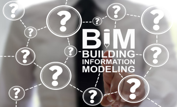
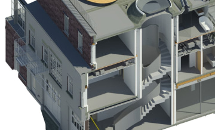

Have any questions? Contact us!
How to Hire a BIM Team
How to Hire a BIM Team
Despite a lack of BIM specialists and common fears of high implementation costs, research shows that all large architecture companies in the US are implementing BIM, and more than a third of small companies use it too. What’s more, the global BIM market looks set to double in size in the next five years, from $4.5 billion in 2020 to $8.8 billion in 2025
As a result, the question for most architectural firms is not just whether they need BIM but how to implement it well.
At Powerkh, over 200 successfully completed projects have shown us that a professional BIM team can completely transform the way your buildings are designed and built. In this article, we'll discuss what makes BIM so attractive to the industry and how to choose and hire a BIM team for a top-notch result.
So let’s get started.
Why do you need a BIM team?
So why do you need a BIM team? The short answer is, BIM implementation is no longer an option for companies that want to remain competitive. Alongside the many benefits BIM brings to the table, BIM implementation will soon become mandatory for the industry as government enforcement increases.
Government pressure
Governments worldwide are working to increase BIM adoption. In the UK, BIM has been mandatory for all public projects since 2016, after it saved the country 15-20% of construction costs . Germany is preparing for the transition to BIM workflows, while France aims to adopt BIM by 2022, and Italy plans to make BIM mandatory even for small-budget projects (less than 1 million euros) by 2025.
Trends in the USA are following suit. Since 2006, BIM has been mandatory for all US Army contractors, and BIM is required at different degrees in states including Wisconsin, Texas, and California.
In summary, with the growing number of countries embracing BIM, it’s only a matter of time until BIM becomes mandatory in your state or country. And if you don’t want to wait, there are plenty of other reasons to consider setting up a BIM team soon.
BIM team benefits
We’ve written elsewhere about the BIM process and its benefits for construction. Here, we’ll run you through how your business wins with a BIM team on board.
Any given construction project can involve hundreds of specialists working on different tasks simultaneously. It’s a no-brainer that we want all parties to communicate fast and efficiently, but in reality, project communication often turns into this:
A BIM team solves this problem in part because it focuses on the communication process between clients, designers, architects, and other teams. A dedicated team can bridge information gaps and keep everyone’s requirements on the table.
Effective communication results in better outcomes too:
- Highly accurate visualization . A BIM team combines graphical and non-graphical data, documentation, and other project details into a single digital model, so you can be sure that everyone has a clear understanding of what the project looks like.
- Enhanced collaboration and control . BIM enables all engaged teams — including designers, architects, and business owners — to bring their expertise and stay up to date with the project both on site and remotely.
- Fewer errors and rework . A BIM composite model enables fast and smooth redraws or redesigns whenever you need them and uses patterns to automate relevant procedures.
- Reduced risk . Digital modeling prevents design conflicts and ensures that a project’s specifications comply with safety and quality regulations.
The upshot is that whether you want to improve project visualization, reduce the number of errors and rework, or avoid risks, hiring BIM engineers is a logical choice. The next step is creating a team that can work together effectively.
BIM Modeling Services
Looking for a way to improve your design and manage your construction effectively? Powerkh - a trusted BIM & VDC services provider with extensive engineering experience and a portfolio of 200+ successful BIM & VDC projects.
Read moreWhat are BIM team roles and responsibilities?
The structure of a BIM team can vary depending on your company size, the nature of your projects, and your level of BIM adoption. In a small company, a BIM specialist may be able to fulfill all roles simultaneously, but this is rarely effective in the long run. Once your projects and company begin to grow, communication difficulties and increasing workloads become a problem.
The best strategy is to work with a BIM team composed of several specialists — a manager, coordinator, and engineer. We’ll look at these roles in more detail below, but first, here’s a breakdown of their responsibilities:
| Role | Main function | Responsibilities |
| BIM Manager | Strategy |
|
| BIM Coordinator | Management |
|
| BIM Engineer | Production |
|
BIM manager
A BIM manager is responsible for implementing BIM and digital procedures in your company and organizing the general workflow. Managers may not have deep technical expertise in BIM modeling itself, but they should be aware of the relevant technology for coordination and training. This means that they need a strong understanding of construction, and they should be well-versed in BIM processes.
Skills
Managers should be experienced in working with relevant management software (for example, usBIM). Depending on your company requirements, managers may also need to work with integrated systems or platforms for collaboration and file management.
If you’re about to hire a BIM Manager , consider your candidate’s soft skills along with their technical knowledge. They should have:
- A big-picture perspective for communication with specialists regardless of whether they are engineers, designers, or stakeholders
- Excellent communication skills for effective collaboration
- Teaching skills to cooperate with people at different levels of understanding and to help people overcome a fear of change
- Good business sense so that they can effectively prioritize tasks and problems
Experience
Managers need strong experience in the construction process, BIM implementation, and workflow setup. Ideally, they will have worked in a variety of positions previously so that they can understand the process from different perspectives.
Salary expectations
According to Glassdoor , the average annual salary of a BIM manager in the US is $86,538. The salary ranges from $60,000 to $124,000.
BIM coordinator
BIM coordinator responsibilities involve work on specific projects, such as verifying the correctness of a BIM model, detecting clashes, and coordinating the project’s workflow from design to construction. If your project is large, you may need several coordinators to work effectively, but if it’s small, you could outsource the BIM coordinator role or appoint a lead BIM engineer instead.
Skills
Coordinators should have strong expertise in BIM technologies to provide technical support and mentoring for the project teams. This includes experience in software for automation, collaboration, model verification (code checking and clash detection), and coordination — some examples are Tekla BIMSight, Grasshopper, Navisworks, and Solibri Model Checker. On top of this, coordinators should be enthusiastic about learning and leveraging new technologies and methods.
Alongside having software proficiency, coordinators should understand and be able to apply methodologies such as Virtual Design and Construction (VDC), the ICE Scoring Model, and the Last Planner System.
When you hire a BIM coordinator , look for candidates with soft skills similar to those we described for a manager role. Just like managers, coordinators collaborate with different specialists, and they need to be able to see the project from different perspectives to link and coordinate submodels.
Experience
Coordinators need a high level of technical experience to understand software potential and limits.
Salary expectations
According to Glassdoor, the average annual salary of a BIM coordinator in the US is $63,641. The salary range is from $44,000 to $91,000. This can drop considerably in other countries: for example, a BIM coordinator in Kyiv, Ukraine, earns around UAH 455,000 ($16,640) per year.
BIM engineer
This role can have different names, such as BIM technician, modeler, engineer, or specialist. BIM engineer responsibilities involve the actual construction of BIM models. For smaller projects, one engineer may be in charge of architectural, structural, and MEP systems modeling. If your project is larger, you can consider hiring a BIM engineer for each task.
Skills
Engineers should have strong expertise in BIM software such as Autodesk Revit and AutoCAD, and be proficient in architectural design and system modeling, structural and energy calculations, robotic processing automation (RPA), and augmented and virtual reality visualization. They should also be experienced enough to comply with VDC, ICE, and Last Planner procedures set by coordinators.
Experience
Required experience for engineers will depend on your project’s complexity and your need for specific technical expertise.
Salary expectations
According to Glassdoor, the average annual salary of a BIM engineer is $54,600. The salary range is from $38,000 to $79,000.
Of course, this is not an exhaustive list of BIM specialist requirements, but it’s a good start for narrowing down your list of candidates. If recruitment feels impractical or overwhelming, it’s time to consider outsourcing to a pre-formed BIM team.

Our Case Studies
Outsource instead of hiring in-house
Hiring in-house is the most straightforward approach that many companies use, but is it the best one? The answer is: it depends.
If you’re a large company that’s willing to spend the time and energy required to get full control over a dedicated and local team of experts, in-house makes sense. The problems begin when time and money become a priority in your BIM recruitment strategy. Often, hiring in-house involves hidden costs and higher competition for a limited number of local specialists.
For example, with an in-house approach, the main disadvantages are:
- Higher recruitment costs . Recruiting the right people takes time and extra manpower, and you’re tied to local salary rates.
- Higher overheads . Costs increase as you pay for annual software licenses (which can run into the thousands), staff training, on-site server maintenance, and so on.
- Loss of time . Workflow can be inefficient during onboarding.
- A lack of local talent . You may run into limited expertise or a lack of specific skills for certain projects.
Outsourcing helps you overcome all these challenges. In particular, by choosing to work with a BIM service provider, you get:
- Access to a vetted global talent pool . You aren’t limited to your location and can work with the world's best professionals. What’s more, outsourced teams are usually more knowledgeable of BIM tools and better aware of industry innovations and best practices.
- Shorter recruitment times . You choose and hire your service provider just once and leave the rest to them. The provider assigns you a pre-formed team with a polished workflow, ready to work on your project from day one.
- Project continuity . Whenever your project requires team restructuring, a higher workload, or rare skill expertise, your provider accommodates it without affecting the project timeline.
- A reduced administrative burden . You focus on the project while the provider handles issues such as staff training and certification, payrolls, medical coverage, and software licensing.
In summary, outsourcing your BIM team makes a lot of sense in most cases. If you’re still not convinced, check out our article about BIM outsourcing, where we dive deeper into the topic.
Never miss a new blog post from us!
Takeaway: Hiring a BIM team gets you ahead
A BIM team can be the solution you need to stay competitive in the industry. Still, with the growing demand for BIM adoption, looking for a BIM coordinato r or working out how to hire a BIM engineer for your team can be challenging. Exact roles and responsibilities can vary according to your project needs, but in our experience, a team with a manager, coordinator, and engineer works well in most cases.
If you already have specialists and are thinking about hiring in-house, opt for versatile candidates with a balanced set of hard and soft skills. In other cases, joining forces with a reliable outsourcing service provider like Powerkh can give you a jump start. With dedicated BIM experts and over 200+ successful BIM & VDC projects in 11 countries, we could be just the partner you’re looking for. Contact us to discuss your project today!

Have a BIM Project? Talk To Us.
-
Enhancing Productivity in BIM Projects: Best Tips & Strategies
Yevhen Surzhan
Tetiana Rapina

-
Boosting productivity for Scan to BIM Projects
Yevhen Surzhan
Tetiana Rapina

-
7 Benefits of BIM Services in Construction
Kostya Rapina
 -
How BIM Works
Yevhen Surzhan
 -
The Benefits of Using Laser Scanning in Construction You Can’t Miss
Kostya Rapina

-
Top 30 Architectural Rendering Companies
Tetiana Rapina

-
Choosing Best BIM Software for Your Project in 2021
Yevhen Surzhan

-
As-Built Drawings 101: All You Need to Know
Kostya Rapina

-
BIM Outsourcing vs in-House Teams
Kostya Rapina

-
Introduction to Virtual Design and Construction
Yevhen Surzhan

-
Construction RFI: Template, Best Practices
Kostya Rapina

-
How to Hire a BIM Team
Yevhen Surzhan